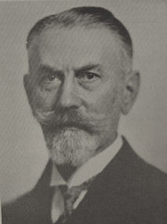

|  |
Eugen von Hippel was the son of Arthur von Hippel (1841-1916), professor of ophthalmology in Königsberg and a pioneer in the field of corneal grafting. In Heidelberg he studied medicine with Wilhelm Heinrich Erb (1840-1921), pathology with Julius Arnold (1835-1915) and ophthalmology with Theodor Leber (1840-1917). He received his medical doctorate in Göttingen in 1889. A physician from 1890, Hippel was Arnold's assistant in pathology in Heidelberg, where he was habilitated in 1893. Here he studied cadavers with severe infections, which influenced the course of his later research.
In 1892 he began to specialize in ophthalmology and became assistant to Dr. Leber. He studied and lectured in ophthalmology and won a prize for his research. He was appointed professor extraordinary in Heidelberg 1897. In 1909 von Hippel moved on to Halle as professor and head of the eye clinic, and in 1914 to Göttingen as professor of ophthalmology. He retired for reasons of failing health in 1934.
Von Hippel took an active role in the work of his students, helping them think and talk through the problems they were tackling. He demanded the best efforts of everyone, physicians, nurses, and all other employees of the clinic. He instilled in everyone the spirit of respect for accomplishment in everything they did. This resulted in a very unusual harmony and positive mutual cooperation which benefited the work of the clinic in very favourable ways.
Von Hippel gained international recognition for his work on the pathological anatomy of the eye.
His daughter was the cellist Lena Chemin-Petit (died 1994).
Über die Palliativtrepanation bei Stauungspupille. Leipzig,
1909.